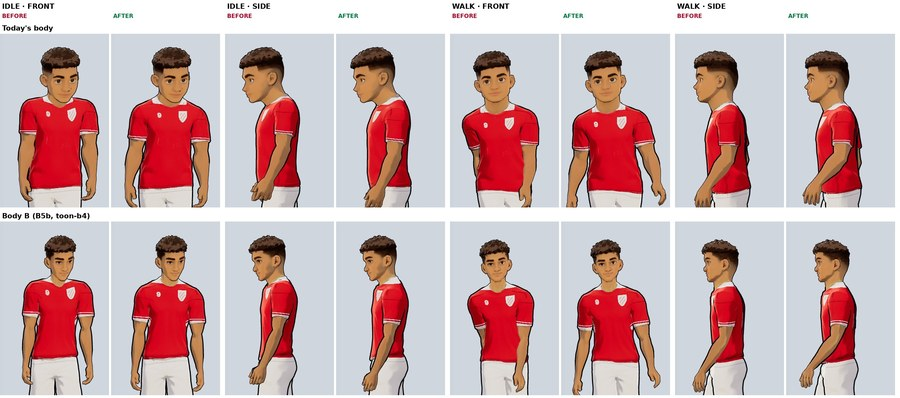
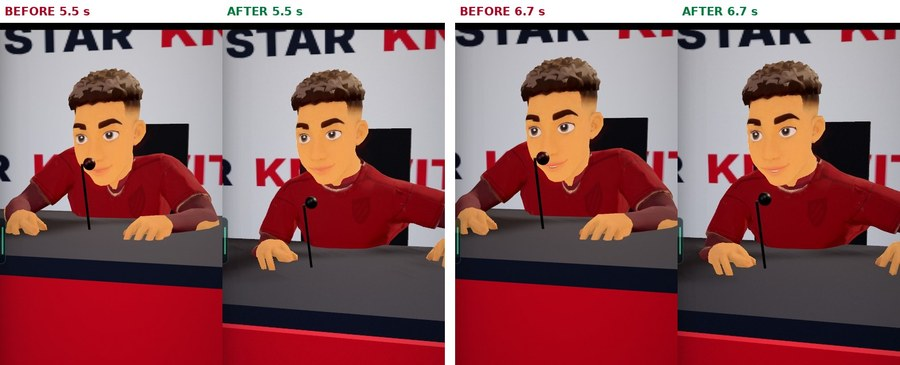
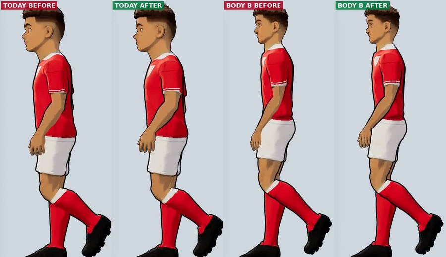
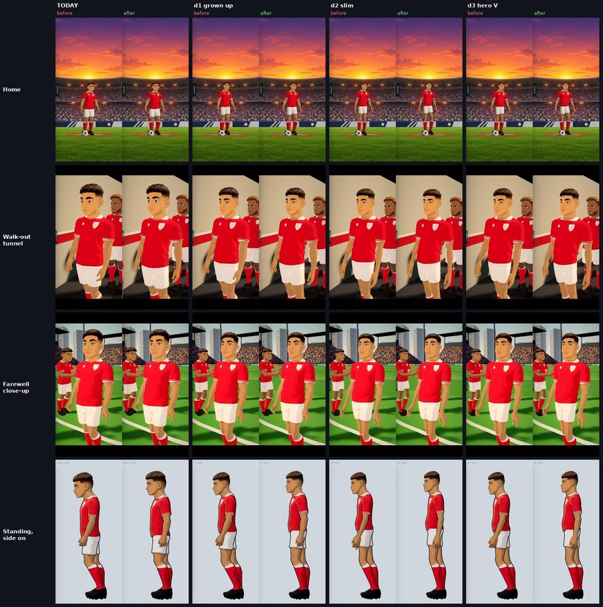
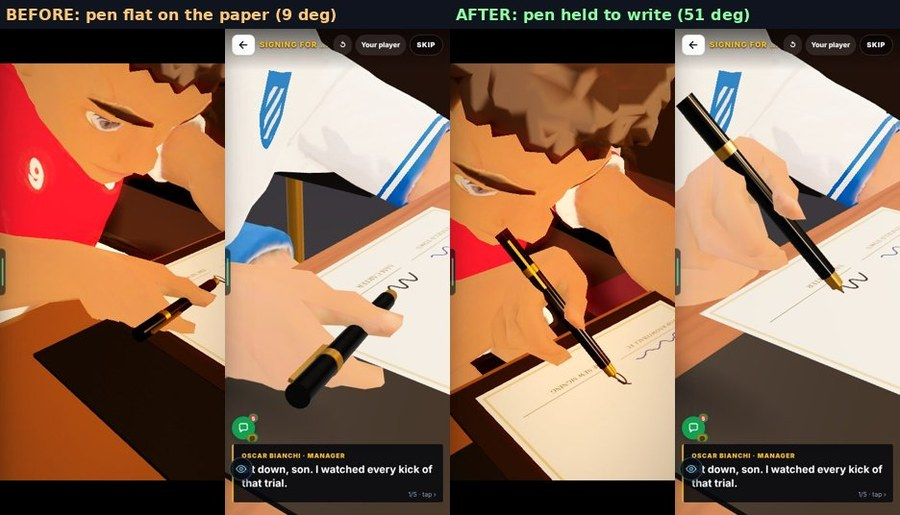
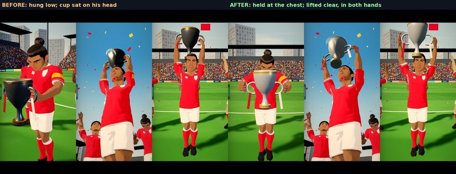
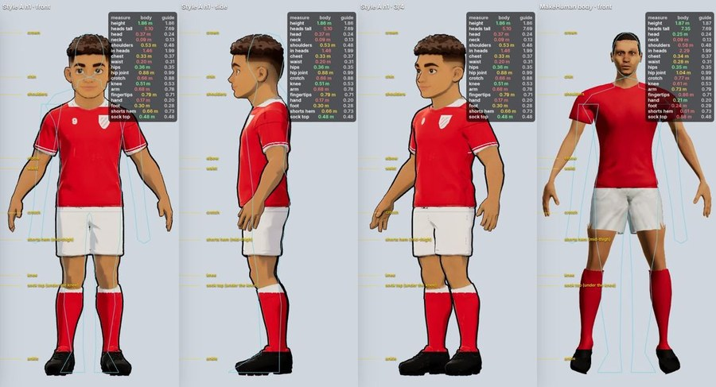
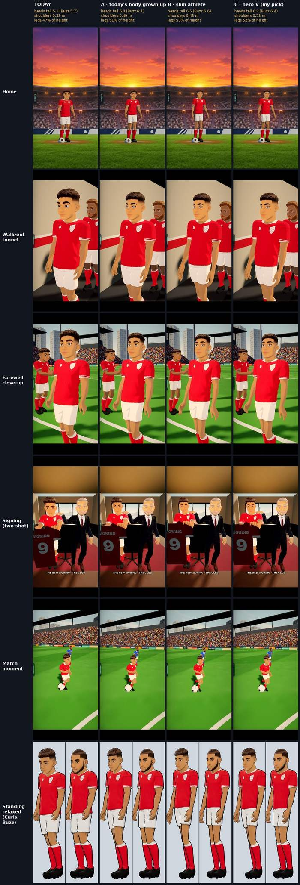
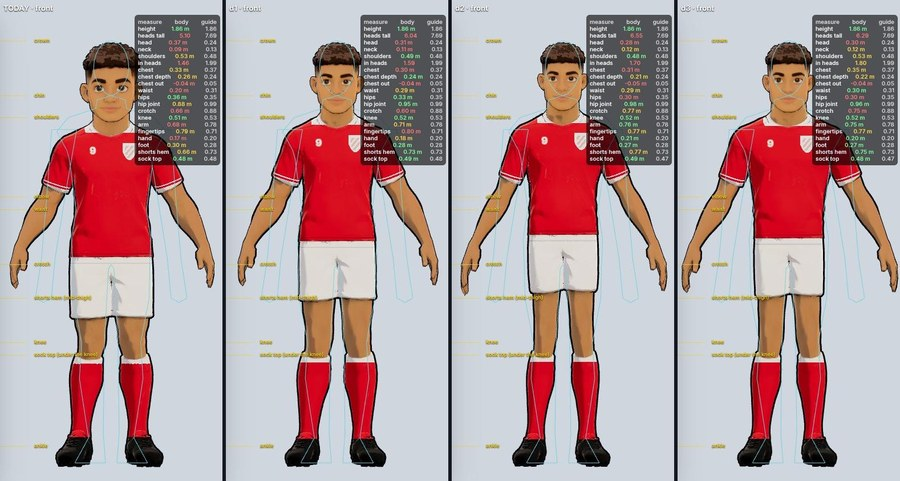

On the Harry branch, not live yet.
Overnight round, 20 Oct 2026 (B5b, B5c, B5d). The clip fixes are merged. The cartoon bodies are on test pages only. In Admin → Patch notes this is v0.94.
The clips lifted the collarbones: about 13° in idle, applause and talk, and 23 to 26° in handshake, wave, point and the celebrations. 49 of 73 clips were above 3°. He looked shrugged, even standing still.
Every body is built with level collarbones. The clips raised them. So the fix is in the clips, not the bodies.
Collarbones are now level unless an arm goes up. With an arm straight up they rise up to 22°, as a real shoulder does. The neck base now sits clear above the shoulder joints. It is baked into the clip files by tools/motionref/settle_clips.mts (lib/star/three3d/shoulderSet.ts). Test: shoulderSet.mts.

In the press answer the desk top was 0.765 m. That was only 11 cm under his seated shoulders. His shoulders sat up at his ears.
Reasoned: with hands on a desk that close, the arms push the shoulders up. The report gives the 11 cm, not the push.
The desk top is now 0.665 m. In the shot, neck ÷ shoulder width went from 0.36 to 0.55.

In the walk, a hand went 8.8 cm into the hip in 92% of frames.
Not in the report.
Each arm now turns about the shoulder just enough to clear the torso, the legs and the head. This is for free-hanging arms, not a hand gripping a prop. On today’s body, clips and scenes with a forearm or hand inside the body: 50 → 20. The goal scene went from 10.5 to 3.1 cm, and the signing from 11.6 to 2.5 cm.

Look for: the same walk, before then after, for both bodies. 7 seconds.
Reasoned: nothing checked whether a body part sat inside another one. The report does not say what existed before.
New check: tools/motionref/body_overlap.mts. It splits the body into 14 parts and tests every pair on every frame. It has a gate (--gate, with overlap_exceptions.json), and the test bodyOverlap.mts runs it. A new or deeper overlap fails the test.
Not zero. Named exceptions: legs (hip fold, inner thighs, knees); upper arm against the lat (needs a body fix); keeper dives; sitting (hands into the shins, 3 to 6 cm).
The wrists were frozen for too much of each scene. The bars show the share of time the wrist is frozen. Real people: 0.00 to 0.02.
Not in the report.
The arms now follow the five HQ reference clips. Frozen-wrist share dropped in all four scenes below. The press answer is still the stillest.
Real people: 0.00 to 0.02.
Look for: the trophy lift three ways: before, after, and a real-looking person made on Higgsfield. 7 seconds.
The capture idle leaned onto its toes. Side on, it read as a slouch.
Measured side on against the 28 reference videos with a pose detector.
A posture step in the same bake, on standing and walking clips only. Side on it is better on every body. Front on the change is small.
Real people: about 0.05.
Real people: about 7.
Real people: 19 to 20.

Look for: the 4-second idle, before on top, after below. Four bodies side by side.
The first posture bake broke keys in clips it should not have touched.
It was caught. tools/motionref/clip_check.mts now refuses to write a broken file.
The pen lay flat on the paper, at 9°.
Not in the report.
It is held at 50°. The hand slips 0.5 cm on the pen, down from 2.5 cm.

The trophy hung low, and in the lift the cup sat on his head. It was also black.
Not in the report.
He holds it by both handles. It is held at the chest, then lifted clear. It is no longer black. With B5c’s grips, the slip is 0.4 cm or less and the cup is 2.6 cm clear of the head.

On a new body the moving face used the Curls eye positions, about 3 cm too low. That drew a ring on the cheek.
The body file’s own name was being overwritten when the person was built (lib/star/people3d.ts). Each file now keeps its own name.
Today’s body is 5.1 heads tall (guide 7.7). Head 0.37 m (guide 0.24). Crotch 0.66 m (0.88). Arms 0.68 m (0.78).
Big-headed concept pictures, and a fit that aimed at the boxy shorts hem.
No change to the game. This is the diagnosis. The realistic B5b bodies were dropped: Harry said the new body with today’s face “is ass, gotta keep our cartoon like faces”. Next: three cartoon bodies below.

We want a body that fits our cartoon faces.
Method: today’s own Style A bodies (Curls, and Buzz & beard) were reshaped in Blender. There is no new body and no head swap. The face, paint and shading are today’s. It is one mesh, so no neck seam. He is still 1.86 m and has the same skeleton, so every clip plays.
A today’s body grown up. B slim athlete. C hero V (the builder’s pick). See them on the test pages with ?bodies=d1, d2 or d3. Six new body files, about 220 KB each.
Waiting on Harry: pick A, B or C. Not changed in the game.
Guide: 7.7. Buzz: 5.7 / 6.1 / 6.6 / 6.4.
Shoulders: 0.53 / 0.49 / 0.48 / 0.53 m. Hip joint: 0.88 / 0.95 / 0.98 / 0.96 m. Hands: 0.17 to 0.18 / 0.18 / 0.21 / 0.20 m. All in the order today, A, B, C.


Look for: the same walk, side on: today, A, B, C. 4 seconds.
Three things are worse or smaller.
Collarbones are level and no body part is inside another in the bind pose on all 8 bodies, measured with B5c’s checker.
Still off from real people: no breathing; the chest leans about 1° back (real men lean a little forward); the relaxed knee is still 27° bent; the pelvis tilts sideways 5 to 6° (real 3 to 4°).
Hips are still about 2.5 times the real number, side on.
Frozen-wrist share is still 0.37, against 0.00 for real people.
Check the press answer.
Hands go into the shins in the sitting clip. The rejected first code (proportions.ts, ?prop) is still in the files. A pale line shows at the neck on the dropped B2 and B3 bodies.
None of this blocks the pick between A, B and C.
Shoulders. Collarbone lift: idle and applause 13° → 0, handshake 26° → 0. 49 of 73 clips were above 3°. Neck base above the joints: idle 4.0 → 8.5 cm, handshake −0.1 → 8.5 cm. Press desk 0.765 → 0.665 m; neck ÷ shoulder width 0.36 → 0.55.
Arms. Walk: 8.8 cm into the hip in 92% of frames. Clips or scenes with an arm inside the body 50 → 20. Goal 10.5 → 3.1 cm, signing 11.6 → 2.5 cm.
Overlap check. 14 parts, every pair, every frame. Exceptions: legs, upper arm against the lat, keeper dives, sitting 3 to 6 cm.
Frozen wrist. Trophy 0.49 → 0.14, goal 0.18 → 0.05, press 0.87 → 0.37, farewell 0.28 → 0.09. Real 0.00 to 0.02.
Posture (ours before → after, real). Hips ahead of ankles 0.24 → 0.13–0.14 (about 0.05). Knee bend 18–21° → 8–12° (about 7°). Head ahead 0.12–0.18 → 0.10–0.14 (0.02–0.17). Arms out 7–9° → 17–18° (19–20°). Elbow 11–13° → 15–16° (19–22°).
Props. Pen 9° → 50°, slip 2.5 → 0.5 cm. Trophy slip 0.4 cm or less, cup 2.6 cm clear of the head.
Today’s body. 5.1 heads (guide 7.7), head 0.37 m (0.24), crotch 0.66 m (0.88), arms 0.68 m (0.78).
A / B / C. Heads tall 6.0 / 6.5 / 6.3. Shoulders 0.49 / 0.48 / 0.53 m. Legs 51 / 53 / 52%. Hip joint 0.95 / 0.98 / 0.96 m. Head 16 to 22% smaller than today.
Higgsfield. 125 credits for the B5c rounds, none after 18:25.
The real-people clip is made on Higgsfield. It is a reference, not game art.